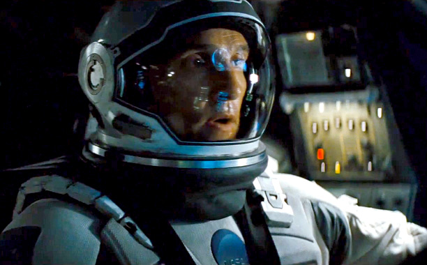
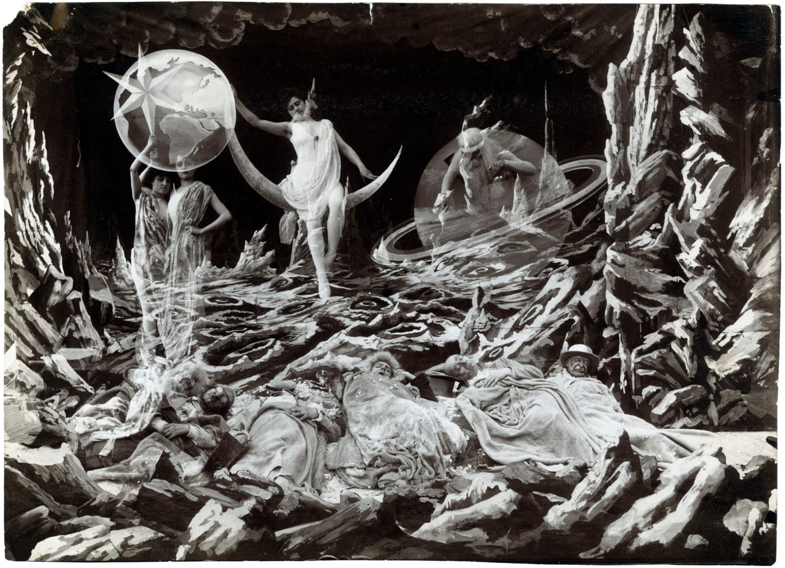
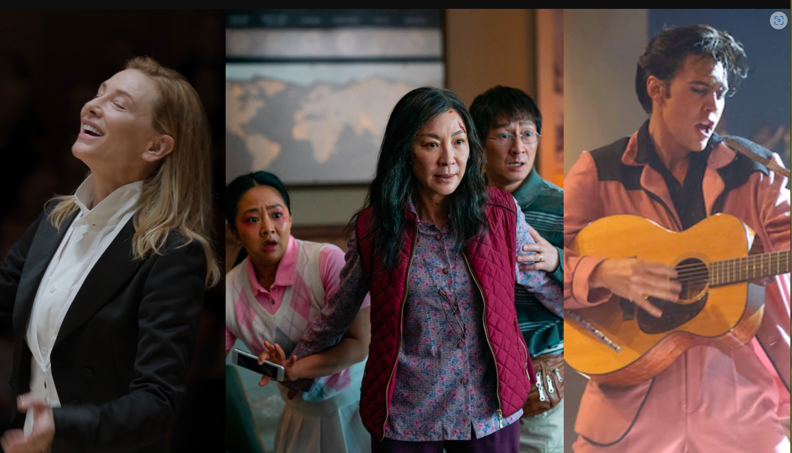
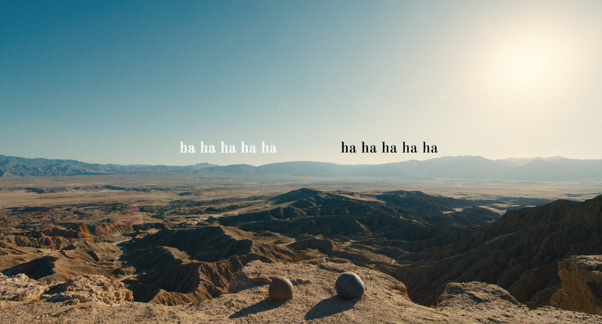
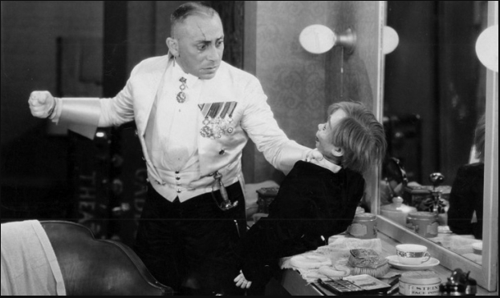

Si los Oscars los decidiera un comité de científicos,
Christopher Nolan estaría camino de hacer historia. Y puede
que la haga. Su fidelidad a la ciencia, su cuidada
interpretación de lo que son hechos reales científicos
comprobables, toda la precisión que ha intentado volcar en
Interstellar ha seducido a los astrofísicos y físicos
españoles que la han convertido en su película de referencia.

Matthew McConaughey en la película Interstellar
Estoy tan acostumbrado a que la ciencia ficción sean Space
Operas que son en realidad westerns, que cuando me encuentro
con una película de ciencia ficción que respeta la ciencia me
emociono y le perdono hasta los fallos
- explicaba este jueves
el físico J. Gómez Cadenas, profesor del CSIC, director del
experimento NEXT en el Laboratorio Subterraneo de Canfranc y
colaborador habitual de Jot Down.
Novelista, autor de libros como Materia extraña, Gómez Cadenas vio la película el
pasado
fin
de semana con sus hijos y salió "encantado", dice. El largometraje está ambientado
en un
futuro apocalíptico, lo que se conoce como distopía, con una Tierra con las reservas
naturales casi extintas. En ese contexto, un ex ingeniero, encarnado por Matthew
McConaughey, acaba formando parte de una expedición desesperada de la NASA a un
agujero
de
gusano descubierto cerca de Saturno, que les conducirá a otra galaxia donde esperan
hallar
mundos habitables.Hasta la parte final, que es un poco pastelón, que no me gusta,
me
dio
igual. Iba con mis hijos y les vi disfrutar tanto que no me molestó. De hecho,
todo
lo
que ocurre desde que
decide entrar en el agujero negro es un poco giro literario, pero pensándolo me
parece
genial, comenta el científico.
"No puedo imaginarme un futuro donde escapar de la Tierra por un agujero de
gusano
sea mejor plan que simplemente arreglar la Tierra"
comenta Neil DeGrasse Tyson
Igualmente destaca la presentación de los agujeros de gusano como portales
tridimensionales o
la incidencia que los fuertes campos gravitatorios tendrían en la relatividad del
tiempo.
En Interstellar, y en el universo real, los fuertes campos gravitatorios originan
que
el
tiempo pase más lento en relación a los demás, escribe DeGrasse
Tyson.
Y apunta que
los
responsables de la cinta saben exactamente cómo, cuándo y por qué puedes alcanzar
la
gravedad cero en el espacio.
Antes de nacer el cine George Méliès era un mago. Era un
ilusionista que vio en el cinematógrafo de los Lumiére la
herramienta perfecta para llevar a cabo trucos con lo que
deslumbrar al público de esos primeros años del siglo XX.
Trucos, maravillosas mentiras con las que demostró que el cine
no sólo podía reflejar la realidad… Podía inventarla.

Escena de la película Viaje a la Luna
Como
buen mago, Méliès exhibió su arte en barracas de feria y creó
centenares de películas en muy pocos años (alrededor de 520
entre 1896 y 1912) con las que pudo crear nuevas realidades y
hacerlo además con una poesía visual y con una intención
narrativa inéditas hasta entonces. Por supuesto uno de sus
referentes era Julio Verne, autor que también imaginaría
mundos.
Méliès, tras una prolífica carrera cinematográfica y pasar a la historia del cine, se
atrevió
con una historia fantástica que iba a basar su capacidad de fascinación en la
utilización de
efectos especiales (que vistos con nuestros ojos, claro, son entrañables y
enternecedoramente inocentones), contando la historia de uno de los sueños del
hombre
del
siglo XX: viajar a la Luna y, consecuentemente, navegar por el espacio.
La película es un mito, una (entretenidísima) leyenda cinematográfica de apenas un
cuarto de
hora de imágenes fascinantes, mágicas y llenas de cariño e imaginación, rebosantes
de
ingenio y encanto que conforman, sencillamente, una obra maestra, un hito del
séptimo
arte y
que supone el comienzo de la ciencia ficción.
Sin duda, una especie única, imprescindible, mítica.
Un año más, por muchas polémicas que haya, todo el mundo del cine estará
atento a las estatuillas doradas de Hollywood, y a las películas y estrellas que se
las
llevarán para casa

Escena de la película Viaje a la Luna
Los Oscars han anunciado sus nominaciones el 24 de enero a través de Riz Ahmed y
Allison
Williams. Y con la lista oficial ya en marcha es el momento de hacer las quinielas,
comentar las favoritas y poner un grito en el cielo tanto por las sorpresas como por
las
grandes olvidadas. Esta es la lista completa de nominadas a los Premios Oscars 2023.
La
gran sorpresa es Sin novedad en el frente, con 9 nominaciones, las mismas
que
Almas
en
pena de Inisherin. Todo a la vez en todas partes lidera la lista con nada
menos
que once
nominaciones y Los Fabelman, otra de las favoritas, se queda en 7.
Elvis
también destaca
con 8 nominaciones.
Más allá de que dos grandes directores como Damien Chazelle y Andrew Dominik hayan
visto
confirmado que sus controvertidas obras recientes no han sido del gusto de la
Academia,
hemos de señalar que este año de nuevo no hay ninguna cineasta nominada en la
categoría.
Sorprende la presencia de Östlund.
Ya en diciembre, a punto de entrar en 2023, llega el momento de cumplir
con
una de esas costumbres tan propias de final de año, sobre todo en esta web: las
listas
de lo mejor. ¿Cómo ha sido la cosecha cinematográfica de 2022? Con esta cuestión en
el
aire, os invito a este repaso por mis películas favoritas de los últimos meses.

Escena de la película Todo a la vez
Un aviso antes de continuar, y de que quizá os llevéis las manos a la cabeza por los
títulos incluidos en el artículo: he tenido en cuenta el calendario español de
estrenos
2022 en salas de cine y directos a plataformas de streaming. Es decir, hay
producciones
de 2021 porque han llegado a salas este año, como 'Drive My Car' de Ryûsuke
Hamaguchi o
'El callejón de las almas perdidas' de Guillermo del Toro, y otras que no están
porque
las distribuidoras de este país han apostado por retrasar esos lanzamientos, como
'The
Banshees of Inisherin' de Martin McDonagh o 'Holy Spider' de Ali Abbasi.
Un año más me doy cuenta que mi ranking está dominado por lo que vi en el Festival de
Cannes, cuyo criterio puede resultar tan cuestionable como cualquier otro, y desde
luego
se les va la mano con la producción francesa o el catálogo de algunas compañías,
pero
debo decir que sigue siendo el gran templo del cine, o al menos del cine que a mí me
entusiasma. Precisamente, la ganadora de la Palma de Oro, 'El triángulo de la
tristeza'
de Ruben Östlund, es una de las obras que todavía no han sido probadas por el
público en
España, al igual que mis dos favoritas de Cannes 2022: 'Decision To Leave' de Park
Chan-wook y 'Fumar provoca tos' de Quentin Dupieux.
No podemos quejarnos de oferta. Al menos, no de escasez de oferta. Lo que me pregunto
es
si estamos valorando adecuadamente cada pieza que llega a nuestras manos. En un año
en
el que se ha destacado la producción del cine de terror, donde el cine español ha
tenido
varios éxitos que han dado mucho que hablar, con la polémica intermitente sobre la
saturación de superhéroes y el abrumador catálogo de las plataformas, me pregunto si
nos
estamos quedando en el consumo superficial. Cuántos títulos vamos a recordar en los
próximos años en medio de esta ansiedad por consumir todo lo que nos resulta
atractivo...
Quien más, quien menos, ha experimentado en algún momento de su infancia
—e
incluso preadolescencia— alguna experiencia desagradable ligada a un terror
irracional
hacia alguno de esos objetos de aspecto generalmente humanoide a los que denominamos
"muñecos". En mi caso, la encargada de quitarme el sueño y de hacerme correr por el
pasillo de casa era una muñeca de porcelana de aspecto homicida —o así la veía yo—,
pero
la diversidad de estas criaturas inanimadas —o eso quieren hacernos creer— es
abrumadora.

Escena de la película The Great Dabbo
Es por esto que, con el retorno de la infame Annabelle en su segundo filme en
solitario
subtitulado 'Creation', nos ha parecido el momento oportuno para hacer un repaso a
19
ejercicios de terror que ha hecho desfilar a los muñecos más malrolleros por
nuestras
pantallas, grandes y pequeñas. Una suerte de terapia de choque para tratar esa
pediofobia latente que todos llevamos dentro.
Un año más me doy cuenta que mi ranking está dominado por lo que vi en el Festival de
Cannes, cuyo criterio puede resultar tan cuestionable como cualquier otro, y desde
luego
se les va la mano con la producción francesa o el catálogo de algunas compañías,
pero
debo decir que sigue siendo el gran templo del cine, o al menos del cine que a mí me
entusiasma. Precisamente, la ganadora de la Palma de Oro, 'El triángulo de la
tristeza'
de Ruben Östlund, es una de las obras que todavía no han sido probadas por el
público en
España, al igual que mis dos favoritas de Cannes 2022: 'Decision To Leave' de Park
Chan-wook y 'Fumar provoca tos' de Quentin Dupieux.
No podemos quejarnos de oferta. Al menos, no de escasez de oferta. Lo que me pregunto
es
si estamos valorando adecuadamente cada pieza que llega a nuestras manos. En un año
en
el que se ha destacado la producción del cine de terror, donde el cine español ha
tenido
varios éxitos que han dado mucho que hablar, con la polémica intermitente sobre la
saturación de superhéroes y el abrumador catálogo de las plataformas, me pregunto si
nos
estamos quedando en el consumo superficial. Cuántos títulos vamos a recordar en los
próximos años en medio de esta ansiedad por consumir todo lo que nos resulta
atractivo...